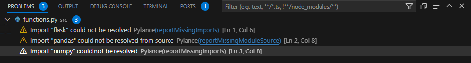
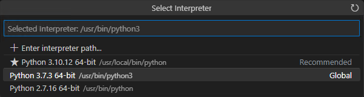

頑張らないために頑張る
ゆるく頑張ります
「Import 'ライブラリ名' could not be resolved」というエラーがVS Codeで出たらインタプリタを変えてみる
概要
とあるFlask向けのコードをVisual Studio Code（以下、VS Code）で書いていたら、こんなエラーが出力されました。
Import "flask" could not be resolved
Import "pandas" could not be resolved from source
Import "numpy" could not be resolved
ﾊｧ？（うさぎ）
$ pip list
Package Version
------------------------- -------
Flask 2.3.2
numpy 1.24.3
pandas 2.0.2上記はインストール済みライブラリの一部を抜粋したもの。Flaskもnumpyもpandasもインストール済みです。そりゃ、ライブラリがなかったらもうちょっと違うエラーメッセージでるよなぁ？
from flask import Flask, jsonify, request, abort, json
import pandas as pd
import numpy as np
# 以下、コード上記はそのコードの一部分を抜粋したものです。えー、なんも変なことしてないんだけど。
なお、これ以外のエラーメッセージは表示されませんでした。謎。
回避策
VS Codeでインタプリタを別のものに変更します。自分の場合は、なぜかこの方法でこのエラーを回避できました。
VS CodeでF1を押し、表示されるメッセージウィンドウに「Python: Select Interpreter」と入力します。全部入力しなくても途中まで入力したら、表示されている一覧の中から該当のものを選択してしまっても問題ありません。

すると上記のような画面が表示されます。これらは現状の環境で選択可能なインタプリタの一覧が表示されているため、他の環境ではまた違った内容で表示されるはずです。現状は/usr/bin/python3が選択されています。これを別のものに変えます。usr/local/bin/pythonに変えてみます。

エラーメッセージが消えました。ﾊｧ？（うさぎ）
参考にしたブログにもあるとおり、もともと存在していて使ってない別のインタプリタを選択しただけです。新規で現状とは別バージョンのインタプリタをインストールしたとか、そういうことはしていません。そのため、「インタプリタが1つしかなくて変更できないんだけど」という場合には使えなさそうです。